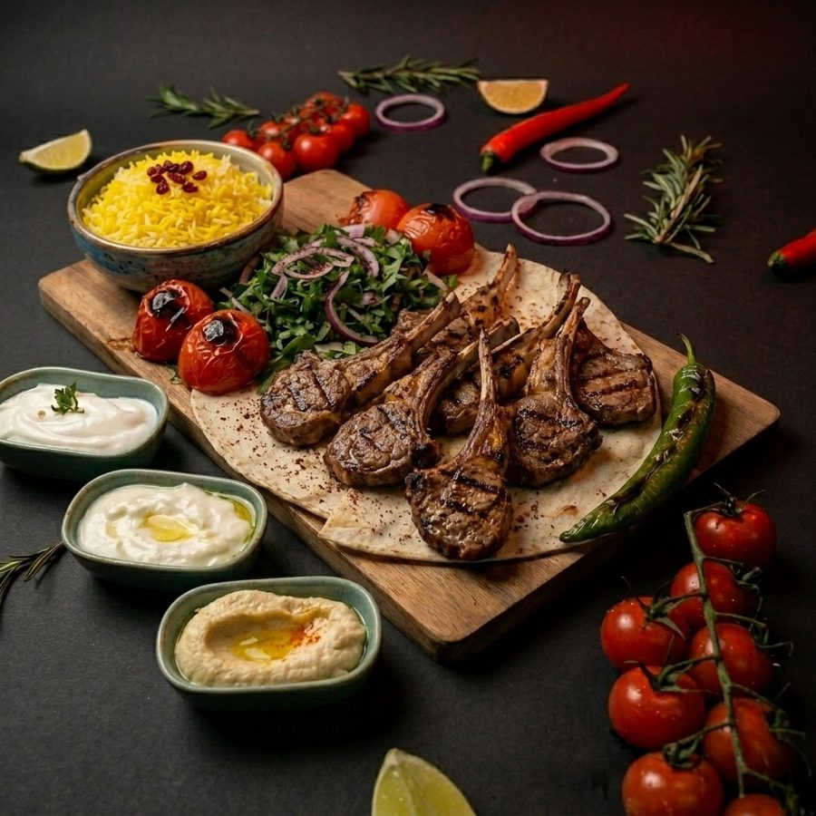

Mezze-Teller
14,50 €Hummus, Muhammara, Mutabal und frischer Salat, serviert mit warmem Fladenbrot.
Zutaten: Kichererbsen, Tahini, Auberginen, Walnüsse, Olivenöl, Fladenbrot
Damaszener Tradition seit Generationen
Bei Schami treffen die Aromen der authentischen orientalischen Küche auf Handwerk und Gastfreundschaft — Mezze, Grillspezialitäten und Familienrezepte, jeden Tag frisch zubereitet.
Damaszener Kultur & Gastfreundschaft
Damaskus ist die älteste durchgehend bewohnte Hauptstadt der Welt — die Wiege der orientalischen Esskultur. Hier, im Schatten der berühmten Umayyaden-Moschee und in den duftenden Innenhöfen voller Jasmin und Orangenbäumen, wird Gastfreundschaft nicht nur praktiziert, sondern zelebriert.
Im Restaurant Schami tragen wir dieses Erbe weiter. Wir vereinen traditionelle Damaszener Geometrie, duftendes Fladenbrot direkt aus dem Ofen und die unvergleichliche orientalische Herzlichkeit.
Das architektonische Meisterwerk von Damaskus. Seine vergoldeten Mosaike, Bögen und Minarette inspirierten unsere Damaskus-Muster.
Traditionelle Innenhof-Oasen mit kühlen Marmorbrunnen, Bitterorangen und duftendem Jasmin — der Inbegriff Damaszener Gemütlichkeit.
Vom historischen Souk al-Hamidiyya bringen wir edlen Sumach, Bergtymian, Walnüsse und reinsten Granatapfelsirup auf Ihren Teller.

Unsere Geschichte
Der Name „Schami" verweist auf Damaskus, die Wiege der authentischen orientalischen Küche — Kräuter, Granatapfel, Sesam und Feuer, seit Generationen im Familienrezept verfeinert. Bei uns wird jedes Gericht von Hand vorbereitet: die Mezze frisch püriert, das Fleisch langsam mariniert, das Brot direkt aus dem Ofen serviert.
Unsere Küche steht für ehrliche Zutaten, offenes Feuer und die Gastfreundschaft, für die der Orient bekannt ist. Kommen Sie vorbei, probieren Sie sich durch unsere Mezze-Auswahl und lassen Sie sich vom Duft der Gewürze verführen.
Speisekarte
Eine Auswahl unserer beliebtesten Gerichte — von kalten Mezze bis zum knusprigen Burger. Preise beispielhaft, vollständige Karte im Restaurant.
Hummus, Muhammara, Mutabal und frischer Salat, serviert mit warmem Fladenbrot.
Zutaten: Kichererbsen, Tahini, Auberginen, Walnüsse, Olivenöl, Fladenbrot

Ganze Dorade frisch vom Holzkohlegrill gegrillt, serviert mit Safranreis, Salat und Knoblauch-Zitronen-Dip.
Zutaten: Dorade, Reis, Zitrone, Knoblauch, Olivenöl, orientalische Kräuter
6 marinierte Lammkoteletts über offener Flamme gegrillt, serviert mit Reis und Salat.
Zutaten: Lammkoteletts, Rosmarin, Knoblauch, Gewürze, Reis
Galerie


Bewertungen
Unsere Gäste loben besonders das freundliche Team, die schnelle Zubereitung und das ausgezeichnete Preis-Leistungs-Verhältnis — Falafel und Schawarma gehören zu den meistgelobten Gerichten.
„Habe selten so gutes Essen gegessen!"
— Google-Bewertung